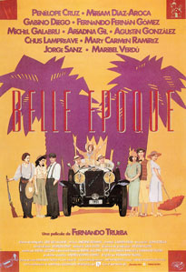

Belle epoque
En el invierno de 1930, tras el fracaso de la sublevación antimonárquica de Jaca, Fernando, un soldado del aeródromo de Cuatro Vientos decide desertar, siendo interceptado ya en febrero de 1931 por una pareja de la guardia civil, que lo arrestan por la deserción.
Camino del cuartelillo el cabo le propone a su subordinado dejarlo en libertad, pues es inminente la llegada de la República, a lo que el otro guardia se niega, dispuesto a cumplir con la legalidad a toda costa, aunque ello le suponga matar al otro guardia que además era su suegro, procediendo, tras ver la barbaridad cometida a suicidarse él.
Aun con las esposas, Fernando llega a un pueblo y se dirige a casa de la Polonia, dispuesto a pasar la noche con la prostituta local.
Allí tiene oportunidad de conocer además a un grupo de personas, que, en una sala contigua juegan a las cartas, y entre las que se encuentran el cura y Manolo, un artista librepensador que lo invita a su casa, haciendo Fernando a cambio la comida dada su buena mano para la cocina, que aprendió en el seminario
Fernando deberá finalmente marcharse ante la inminente llegada de sus hijas y buscar otro destino, aunque cuando llega a la estación y ve que del tren bajan las cuatro hijas de su amigo se queda prendado de ellas, y, pretextando haber perdido el tren regresa a su casa, dejando a las muchachas fascinadas con sus aventuras como desertor del ejército.
Reciben también la visita de Juanito, que acude junto a su madre, una beata carlista a pedir la mano de Rocío, una de las hijas de Manolo, aunque cuando esta niega estar enamorada la madre se alegra, pues no le agrada emparentar con unos agnósticos.
Se celebra el carnaval, y tanto las chicas como Fernando, disfrazado de doncella acuden al baile, donde Violeta, disfrazada de soldado besa a Fernando, al que saca a bailar, llevando ella el paso, librándolo posteriormente de otro hombre que lo molestaba, debiendo huir tras ello del lugar y acabando en un pajar donde hacen el amor.
Fascinado por Violeta, al día siguiente Fernando le confiesa a Manolo que se ha enamorado ante lo que su amigo le dice que su amor es imposible, aunque cuando Fernando le cuenta que se acostaron juntos Manolo se muestra feliz, hasta que la propia Violeta le dice que lo de la noche anterior no significa nada, desanimando de nuevo a Manolo que le explica a Fernando que es imposible que se case con Violeta, pues ella es como un hombre.
Decepcionado, Fernando prepara su maleta para marcharse, aunque lo retiene Clara, la mayor, que se quedó viuda por un corte de digestión de su marido, y que tras contarle su tragedia y hablarle de Violeta - que hizo la comunión vestida de marinero - le da un beso.
Entretanto, y tras haber hecho las paces la noche anterior, Juanito regresa a ver a Rocío, esta vez con el traje de novia de su madre, que espera que su novia se pruebe para hacerle los retoques necesarios.
Pero cuando Rocío le pide que tenga paciencia y que espere a la llegada de la República para casarse, pues así podrán divorciarse si lo desean, vuelven a marcharse indignados.
Rocío se queda entonces llorando y en paños menores tras quitarse el vestido de novia, y Fernando, que se iba con su maleta entra para consolarla, acabando por acostarse con ella, pese a lo cual descubre que tampoco eso significa nada para Rocío, que sigue enamorada de Juanito, lo que lleva a Fernando a marcharse definitivamente.
No llega a hacerlo, pues se emborracha y pierde el tren, llevándolo Manolo, tras encontrarlo borracho, de vuelta a su casa.
Entretanto Juanito, enamoradísimo de Rocío acude a ver a Don Luis, el párroco, para decirle que está dispuesto a apostatar si con eso consigue ganarse el amor de Rocío.
Clara pasea con Fernando por la orilla del río en que murió el marido de esta y le cuenta que se siente sola desde que se quedó viuda, ante lo que Fernando la besa, y ella lo empuja al río, aunque arrepentida de inmediato debe ayudarlo a salir, ya que no sabe nadar, y tras sacarlo acaba finalmente haciendo el amor con él.
Pero el baño hace que Fernando enferme, cuidándole las cuatro hermanas.
Al día siguiente llega a visitarlos Amalia, la madre de las chicas tras regresar de una gira por Sudamérica representando zarzuelas, junto con Danglard, su representante, y amante.
Este llorará de dolor al ver que ella se acuesta con Manolo, debiendo este consolarlo, diciéndole que, si lo mira bien, debería ser él el ofendido, ya que es el marido, lamentando Danglard que, pese a lo afirmado por Amalia, su gira fue un absoluto fracaso y perdió muchísimo dinero con ella.
Llega entonces la noticia del triunfo de la República que celebran con alegría.
Durante una salida al campo, donde Fernando prepara una paella, Luz, la pequeña, y la única realmente enamorada de Fernando se muestra indignada por las atenciones prestadas a sus hermanas, debiendo acudir Fernando a consolarla, siendo sus hermanas testigos de ese primer encuentro de la hermana menor, con la que Fernando está también a punto de acostarse, lo que ellas evitan, aunque esa noche Luz se cuela en su cama.
Enseguida organizan la boda de los jóvenes, descubriendo al llegar a la iglesia que Don Luis se ha suicidado, por lo que no se puede celebrar la ceremonia, si bien, y dada la llegada de la República Manolo decide que se consideren casados, pues no es necesaria ya la bendición de la iglesia.
Finalmente las hermanas de Luz se marchan en el tren, mientras Fernando y ella se irán con la madre de ella buscando una vida mejor en América, tierra de oportunidades, donde Amalia regresa para continuar con su "triunfal" gira.
Pero Fernando mira con nostalgia a las otras hermanas, no pareciendo feliz de tener que renunciar a ellas.